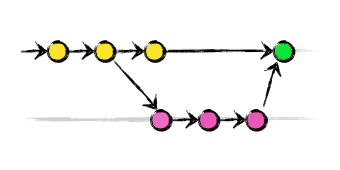
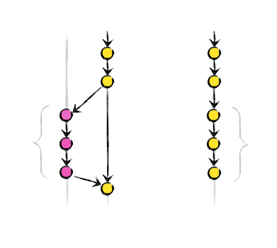

Git: de cero a cien
Grupo de Usuarios de Linux
Miguel
de la Cruz Fernández
Desarrollador Web - Sysadmin
Salenda
Primera parte
Las bases
Qué es Git
Sistema de control de versiones
- Distribuido
- Simple
- Rápido
- Eficiente
- Preparado para desarrollos no-lineales
Distribuído VS Centralizado
- Mi repositorio es local
- Trabajo sin conexión
- Mis cambios son míos hasta que los pongo en común
- Integridad, todo en Git tiene su checksum
Caso de éxito
El kernel de Linux
Cómo funciona Git
- Agrupa los cambios en commits
- Los ficheros tienen tres estados
- commited
- modified
- staged
En cualquier momento
# Ayuda genérica
$ git help
# Ayuda de un comando concreto
$ git help COMANDO
Git dispone de ayuda sensible al contexto en muchos comandos
Página web oficial: git-scm.com
Tu identidad
# Configuramos el nombre de usuario para todos nuestros commits
git config --global user.name "Foo Bar"
# Configuramos nuestro email para todos nuestros commits
git config --global user.email "foo@bar.com"
# Si quitamos la opción --global, los parámetros solo se aplican
# al repositorio en el que estemos
git config user.name "Específico de este repo"
git config user.email "especifico@example.com"
Commits
Snapshots de nuestro código asociados a un checksum
Físicamente, Git solo almacena el "incremento" de un commit respecto a otro
Workflow básico
- Hago cambios en el repositorio
- Añado los ficheros a mi staged zone
- Hago el commit
- GOTO 1
Crear un repositorio
Desde cero
$ git init .
Si queremos clonar otro repositorio
$ git clone URI DESTINO
Primer commit
# Creamos un fichero vacío
$ touch nuevoFichero
# Lo añadimos al repositorio (y al commit)
$ git add nuevoFichero
# Hacemos commit
$ git commit -m "Primer commit con un fichero vacío"
[master (root-commit) e88f7b4] Primer commit con un fichero vacío
0 files changed
create mode 100644 nuevoFichero
Comprobar el estado de mi repositorio
$ git status
# On branch master
nothing to commit (working directory clean)
# Añadimos texto al fichero
$ echo "Un texto cualquiera" >> nuevoFichero
$ git status
# On branch master
# Changes not staged for commit:
# (use "git add ..." to update what will be committed)
# (use "git checkout -- ..." to discard changes in working directory)
#
# modified: nuevoFichero
#
no changes added to commit (use "git add" and/or "git commit -a")
Añadimos el cambio al commit
# El fichero pasa a estar en el estado "staged"
$ git add nuevoFichero
$ git status
# On branch master
# Changes to be committed:
# (use "git reset HEAD ..." to unstage)
#
# modified: nuevoFichero
#
Hacemos commit
$ git commit -m "Texto añadido al fichero"
[master 714a6dd] Texto añadido al fichero
1 file changed, 1 insertion(+)
$ git status
# On branch master
nothing to commit (working directory clean)
El log
Nos sirve para revisar el historial de nuestros commits
MUY versátil
# Log del commit anterior
$ git log -1
commit 714a6dddcca12859433dce6fb800cf0411ed7593
Author: Miguel de la Cruz
Date: Fri Sep 21 10:56:41 2012 +0200
Texto añadido al fichero
Un log más completo
$ git log --graph --oneline --branches
* 390cdf1 copy tweaks
* f12ac5f Merge branch 'master' of github.com:hakimel/reveal.js
|\
| * 21d8007 Merge pull request #141 from rmurphey/node_0.8
| |\
| | * 9688d3a package.json for node 0.8+
| |/
* | 024105f fix mixed spaces & tabs, remove unused feature test
|/
* 28567f3 Merge branch 'master' of github.com:hakimel/reveal.js
|\
| * 48390c0 readme update
* | edfcfb1 open slide notes window automatically #135
* | 884ecc6 Merge branch 'open-notes-in-new-window'
|\ \
| |/
|/|
| * 77d338f Open notes in new window, instead of printing
Revertir cambios
# Nos traemos los ficheros del HASH
git checkout HASH archivos
# borramos de este hash en adelante
git reset --hard HASH
# crea un nuevo commit sin el cambio que hubiera en HEAD
git revert HEAD
Ignorando ficheros
En nuestro repositorio puede haber ficheros que queramos ignorar
Podemos usar el fichero oculto .gitignore
Basado en wildcards
Ejemplo de .gitignore
$ cat .gitignore
stacktrace.log
*.swp
*.class
.classpath
.project
.settings/
target/
bin/
target-eclipse/
Ramas
# Crear una rama
$ git branch NOMBRE
# Listar ramas
$ git branch
# Borrar una rama
$ git branch -d NOMBRE
El nombre por defecto de la rama principal es master
Desplazarnos por un repositorio
# La rama actual aparece marcada con un *
$ git branch
* master
rama
# Movernos a una rama
$ git checkout NOMBRE
Switched to branch 'rama'
Posibles usos de las ramas
- Desarrollar funcionalidades nuevas sin modificar el código estable
- Una rama por incidencia
- Hacer cambios en una versión en producción
- Tener un branch por entorno (testing, producción...)
- Gestionar versiones
Merge
El comando merge intenta juntar los cambios de dos ramas y commitear el resultado en una de ellas (rama destino)
Ejemplo
Traernos los cambios de la rama i42 a master
# Nos desplazamos a la rama en la que queremos juntar los cambios
$ git checkout master
# Hacemos el merge
$ git merge i42
Updating 714a6dd..1a1678a
Fast-forward
nuevoFichero | 1 +
1 file changed, 1 insertion(+)
Fast Forward
Conflictos
Si hemos cambiado la misma sección de un fichero en dos ramas diferentes, habrá conflictos al mergearlas
$ git merge rama
Auto-merging nuevoFichero
CONFLICT (content): Merge conflict in nuevoFichero
Automatic merge failed; fix conflicts and then commit the result.
$ git status
# On branch master
# Unmerged paths:
# (use "git add/rm ..." as appropriate to mark resolution)
#
# both modified: nuevoFichero
#
no changes added to commit (use "git add" and/or "git commit -a")
Resolución del conflicto
# Contenido del fichero
$ cat nuevoFichero
<<<<<<< HEAD
Un texto cualquiera (en castellano)
=======
Un texto cualquiera (dos líneas)
>>>>>>> rama
Más texto
- Resolvemos el conflicto dejando solo las líneas de la solución
- Añadimos el fichero con git add
- Terminamos el merge haciendo commit
Interacción entre repositorios
Nuestro repositorio local almacena las direcciones de otros repositorios en forma de remotos
El repositorio central que usamos a modo de servidor se suele nombrar como origin
CRUD de remotos
# CREATE
$ git remote add NOMBRE URI
# READ (podemos usar -v para obtener más datos)
$ git remote
origin
# UPDATE = REMOVE + CREATE
# DELETE
$ git remote rm NOMBRE
Sincronizar con un remoto
Usamos push y pull para enviar y traernos los cambios respectivamente
Ejemplos de URIs
https://github.com/hakimel/reveal.js.git
git@github.com:hakimel/reveal.js.git
file:///tmp/reveal.js
push
# Formato
$ git push REPOSITORIO RAMA
Envía los commits de una rama a la misma rama en el remoto
Puede fallar si en la rama remota había cambios que nosotros no tuviéramos, en cuyo caso tendríamos que hacer pull primero
pull
Sincroniza nuestra rama con la rama remota, descargando los cambios
# Formato
$ git pull REMOTO RAMA
Si hay cambios en el remoto y en nuestro repositorio, los mergea automáticamente
Tags
Un tag es una etiqueta para un commit
# Crear un tag
$ git tag NOMBRE -m "Mensaje"
# Listar tags
$ git tag
# Inspeccionar un tag
$ git tag show NOMBRE
# Borrar un tag
$ git tag -d NOMBRE
# Subir los tags a un remoto
$ git push --tags
Segunda parte
Git avanzado
Guías de estilo en los commits
Facilitan mucho la lectura y la colaboración al mantener criterios comunes
Evitar espacios en blanco
Git nos facilita una herramienta que intenta localizar espacios en blanco
# Se han sustituido los espacios por X
$ git diff --check
file:2: trailing whitespace.
+XXXXXXXXXXXXXXX
file:3: trailing whitespace.
+Another group with spacesXXXXXXXXXXXXXXX
Un commit por cada grupo de cambios
Hay que intentar separar cada grupo lógico de cambios en un commit propio
- Mejora la legibilidad del histórico
- Facilita la localización de la información
Mensajes de calidad
Son una buena práctica que mejora la legibilidad
Herramientas como git rebase pueden confundirse si nuestros mensajes son malos
Guidelines
- Una línea de 50 caracteres resumiendo el commit
- Una línea en blanco
- Párrafos con líneas de 72 caracteres aprox. detallando el commit
- "Añade cambios en los estilos"
Git blame
git blame nos sirve para saber quién ha cambiado cada línea del repositorio y cuando
Muy útil para revisiones de código y para probar nuestra inocencia... o no
Ejemplo de blame
$ git blame file
^728badb (Miguel de la Cruz 2012-11-04 23:49:08 +0100 1) One line
^728badb (Miguel de la Cruz 2012-11-04 23:49:08 +0100 2)
^728badb (Miguel de la Cruz 2012-11-04 23:49:08 +0100 3) A little change
No muestra información de líneas borradas o reemplazadas
Rebase
Cuando hacemos merge, si no hay fast-forward, el resultado de mezclar ambas ramas crea un commit
Para evitar este commit que "ensucia" el histórico, utilizamos rebase
Ejemplo de rebase
# Nos desplazamos a la rama donde queremos hacer el rebase
$ git checkout rama
# Ejecutamos el rebase
$ git rebase master
Conflictos
# Si surge un conflicto a la hora de aplicar un commit, el rebase
# se detendrá para que lo solucionemos
# Solucionar un conflicto y continuar
$ git add ficheroConConflicto
$ git rebase --continue
# Abortar el rebase
$ git rebase --abort
Integración
Con el rebase completo, rama contendrá los commits de master y los propios aplicados y mergeados encima
Si hacemos un merge de rama con master, se hará en forma de fast-forward y el historial quedará limpio
El reflog
El reflog es un mecanismo que registra información cada vez que una rama se actualiza
El comando reflog sirve para manejar esta información
# Utilizado sin argumentos
$ git reflog
a37c208 HEAD@{0}: checkout: moving from mi_rama to master
63d5552 HEAD@{1}: commit: Second commit
a37c208 HEAD@{2}: checkout: moving from master to mi_rama
a37c208 HEAD@{3}: commit (initial): First commit
Caso de uso: recuperar una rama borrada
# Hacemos commit en una rama
$ git commit -m "Very important commit"
# Nos vamos a master
$ git checkout master
# Borramos la rama sin mergearla
$ git branch -d my_branch
error: The branch 'my_branch' is not fully merged.
If you are sure, run 'git branch -D my_branch'
$ git branch -D my_branch
Deleted branch my_branch (was 456f354).
Solución
# Buscamos el SHA-1 del último commit de la rama
$ git reflog
6d58dc8 HEAD@{0}: checkout: moving from my_branch to master
456f354 HEAD@{1}: commit: Another very important commit
2923106 HEAD@{2}: commit: Very important commit
6d58dc8 HEAD@{3}: checkout: moving from master to my_branch
6d58dc8 HEAD@{4}: commit (initial): First commit
# Nos desplazamos hasta él
$ git checkout 456f354
# Re-creamos la rama con su contenido
$ git checkout -b my_branch
Formas de referenciar a un commit
Existen varias formas de referenciar a un commit
El método más básico es utilizar el Hash SHA-1
# Podemos utilizar el SHA-1 completo
$ git log
commit a37c208c30eaa2801b22e6ee79e153ada23f463c
Author: Miguel de la Cruz
Date: Sun Nov 4 22:33:22 2012 +0100
First commit
# O un SHA-1 parcial, de al menos 4 caracteres y único
$ git log --oneline
a37c208 First commit
Ramas como referencias
Una rama es un puntero a un commit
Podemos usar el nombre de la rama para referirnos a su último commit
$ git show my_branch
commit 63d5552ecb9abb5675351516a589438cf15dd7e3
Author: Miguel de la Cruz
Date: Sun Nov 4 23:15:19 2012 +0100
Second commit
diff --git a/file b/file
index 48ab6c8..21b7217 100644
...
Referencia mediante ancestros
HEAD referencia al commit en el que nos encontramos
# El padre de HEAD
$ git show HEAD^
# El padre del padre del padre de HEAD
$ git show HEAD^^^
# Sintaxis equivalente
$ git show HEAD~3
Commits con varios padres
Cuando referenciamos al padre de un commit de merge, existen dos padres
El primer padre es el commit de la rama en la que hicimos el merge
El segundo padre es el commit de la rama de la que hicimos el merge
Ejemplos de sintaxis
# Primer padre de HEAD
$ git show HEAD^1
# Segundo padre de a37c208
$ git show a37c208^2
# Segundo padre del tercer ancestro de la rama my_branch
$ git show my_branch~3^2
# Otra forma de referenciar el último caso
$ git show my_branch^^^2
Su posición en el reflog
Podemos referenciar un commit a partir de su posición en el reflog
$ git reflog
6d58dc8 HEAD@{0}: checkout: moving from master to 6d58dc8
6d58dc8 HEAD@{1}: checkout: moving from my_branch to master
456f354 HEAD@{2}: commit: Another very important commit
2923106 HEAD@{3}: commit: Very important commit
6d58dc8 HEAD@{4}: checkout: moving from master to my_branch
6d58dc8 HEAD@{5}: commit (initial): First commit
$ git checkout HEAD@{2}
Stashing
En ocasiones nos veremos forzados a cambiarnos de rama dejando la nuestra sucia
Git no nos permite este comportamiento
¿Solución? git stash
Stash
stash nos permite almacenar la suciedad de nuestra rama y recuperarla después
Se utiliza en momentos puntuales y habitualmente por causas de fuerza mayor
Advertencia
Es muy fácil que nos olvidemos de los stashes que creamos si dejamos pasar algo de tiempo
Uso de stash
# Crear un stash
$ git stash
# Listar los stashes
$ git stash list
# Aplicar un stash
$ git stash apply STASH
# Borrar un stash
$ git stash drop STASH
# Aplicar & Borrar un stash
$ git stash pop STASH
Staging interactivo
Nos facilita el realizar un commit cuando tenemos mucha información mediante una interfaz interactiva
# Ejemplo de staging interactivo
$ git add -i
staged unstaged path
1: unchanged +4/-0 file
*** Commands ***
1: status 2: update 3: revert 4: add untracked
5: patch 6: diff 7: quit 8: help
What now>
Añadir un parche
Es lo mismo que utilizar git add -i y la opción de patch
# Ejemplo de git patch
$ git add --patch file
# Sintaxis equivalente
$ git add -p file
Estas opciones son útiles cuando hemos hecho muchos cambios que queremos dividir en varios commits
Borrado de contenido remoto
Puede darse el caso de que hayamos subido commits y ramas a nuestro repositorio que queramos borrar
Regla de oro: asegurate de que nadie se ha bajado tus cambios
Borrar una rama remota
# Sintaxis genérica
$ git push REPOSITORIO :RAMA
# Ejemplo: borramos la rama "funcionalidadX"
$ git push origin :funcionalidadX
Forzar un push
Existen casos en los que, cuando hay un conflicto de referencias, podemos forzar a que el repositorio remoto deseche las suyas y acepte las nuestras
# Sintaxis genérica
$ git push -f REPOSITORIO RAMA
Caso de uso: después de un amend
# Hacemos un commit y lo subimos
$ git commit -m "Commit incompleto"
$ git push origin master
# Añadimos un pequeño cambio al commit
$ git commit --amend
# Intentamos hacer push
$ git push origin master
To git@github.com:mgdelacroix/test.git
! [rejected] master -> master (non-fast-forward)
error: failed to push some refs to 'git@github.com:mgdelacroix/test.git'
Solución
# Basta con forzar el commit
$ git push -f origin master
Es posible que el repositorio tenga activada una opción para rechazar este tipo de commits
Configuración de Git
git almacena la configuración en varios ficheros, que recorre secuencialmente
Dependiendo de donde esté guardada, la configuración se aplicará a uno o varios usuarios
Configuración de Git
Podemos guardar un valor de configuración o bien escribiendo en el fichero, o bien usando el comando git config
- /etc/gitconfig: parámetro --system
- ~/.gitconfig: parámetro --global
- .git/config: sin parámetros
Uso del comando config
La sintaxis básica del comando git config es la siguiente:
# Sintaxis genérica
$ git config [TYPE] CLAVE [VALOR]
# Obtener el valor de user.name
$ git config user.name
# Setear el valor de user.name
$ git config user.name "Miguel de la Cruz"
# Setear el mismo valor para todos mis repositorios
$ git config --global user.name "Miguel de la Cruz"
Algunos parámetros interesantes
- core.editor: editor por defecto
- color.ui: git colorea automáticamente la mayoría de su output (valores true/false/allways)
- diff.tool: git usará esta herramienta cuando hagamos un diff
- merge.tool: git usará esta herramienta cuando hagamos un merge
Preguntas?
¡Gracias!
- Correo: mgdelacroix@gmail.com
- Twitter: @mgdelacroix
- Github: github.com/mgdelacroix